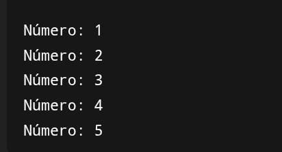
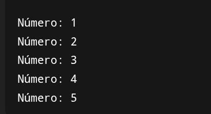
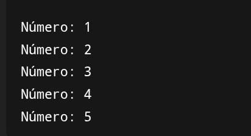

Exemplo
 

O laço while funciona assim:
Ele repete um conjunto de instruções enquanto uma condição for verdadeira.
Primeiro, o programa verifica se a condição é verdadeira. Se for, ele executa o bloco de ações definido.
Depois de executar, ele volta para verificar novamente a condição.
Se continuar verdadeira, repete o processo.
Quando a condição deixar de ser verdadeira, o laço para e o programa segue para a próxima parte.
Um detalhe importante: se a condição nunca mudar para falsa, o laço nunca vai terminar, o que chamamos de “loop infinito”.
